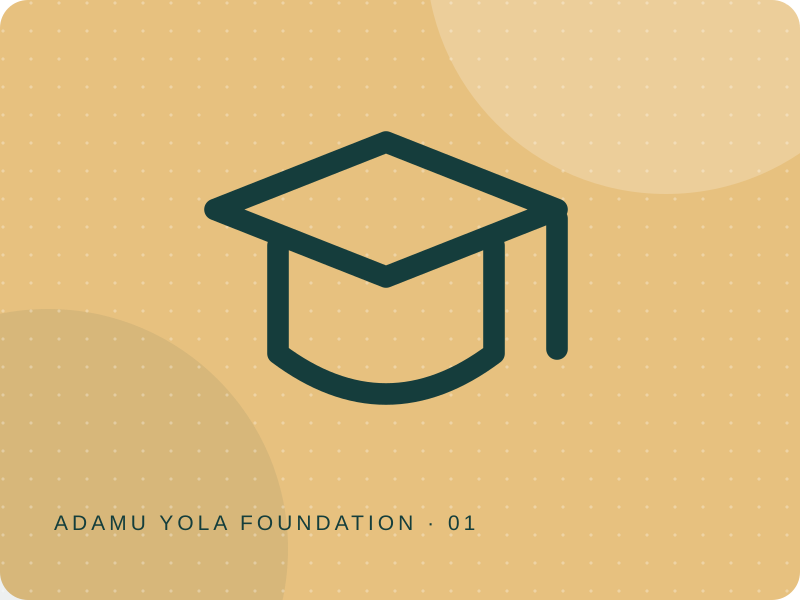
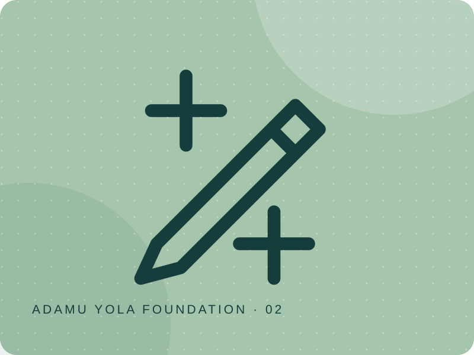
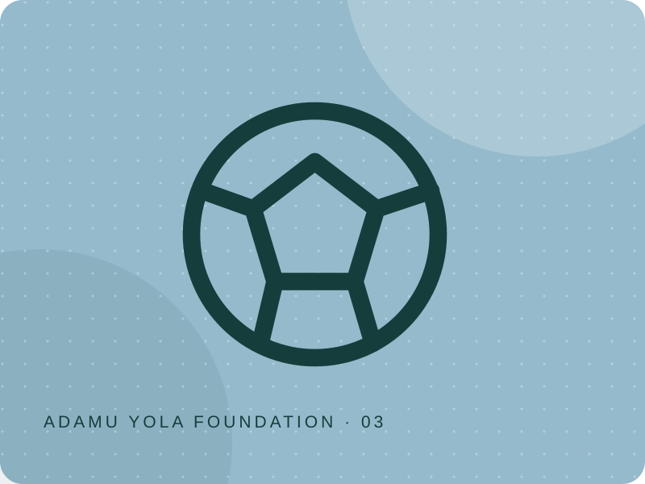
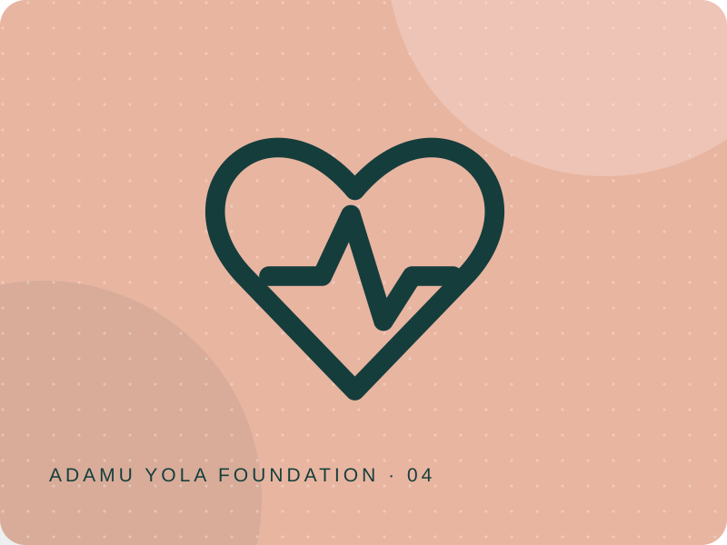
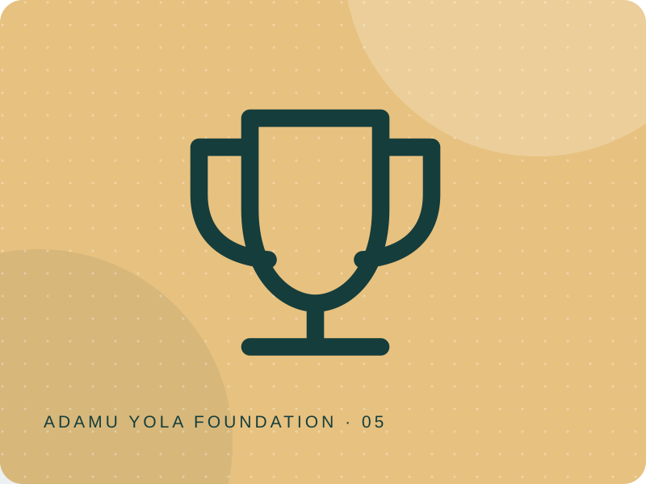

01Education & scholarships
Educational Empowerment
Removing financial barriers so learners can keep moving forward.
Explore programmeAcross education, practical training, grassroots sport and community health, our initiatives are designed around access and opportunity.

01Removing financial barriers so learners can keep moving forward.
Explore programme
02Practical skills that can open doors to independence.
Explore programme
03More than football. A meeting place for peace, talent and community.
Explore programme
04Bringing essential health support closer to communities.
Explore programme
05A new stage for school football across Gombe State.
Explore programmeProgramme participation and eligibility details are shared when officially confirmed. Contact the foundation for the latest information.
Activities such as the 2021 North-East Elite Basketball Camp and community peace campaigns are part of the historical record. Explore how our work has developed over time.
Explore the history